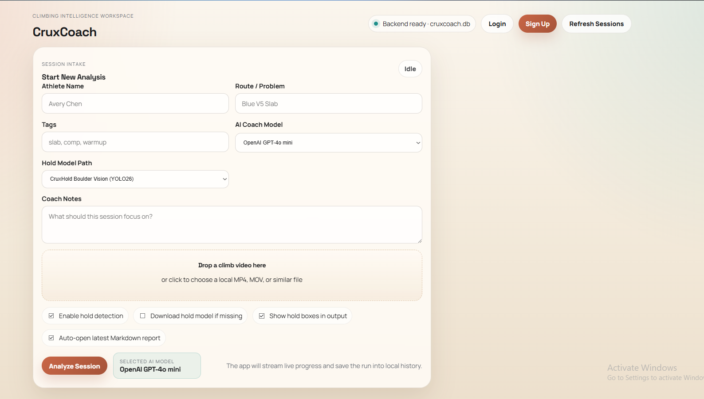

Machine Learning & AI Intern
Bouldering coaches lacked an objective, automated way to analyze athlete movement. Video review was done manually, inconsistently, and without structured data. Crux AI needed a vision pipeline that could turn raw climbing footage into coaching-ready insights at scale.
This internship focused on building that pipeline end-to-end — from data labeling and model training to structured output generation and LLM-assisted movement reports.
End-to-End Vision Pipeline
I designed an end-to-end system combining two YOLOv11 models: hold detection (jugs, crimps, slopers, pockets, volumes) and athlete pose estimation. The pipeline syncs hold detections with pose keypoints to map how an athlete moves across the wall over time.
Curated and labeled bouldering footage in Roboflow covering 5 hold classes, with bounding-box annotations, edge cases, and augmentation strategies.
Frame-level sync of 17-keypoint pose skeleton with hold detections, enabling grip-to-joint distance analytics and movement path visualization.

Technical Implementation
Automated Video Processing
Raw climbing video is ingested and processed frame-by-frame using OpenCV. Hold detection and pose estimation run in parallel, then aggregate into per-rep structured JSON including hold sequence, movement distance, joint trajectories, and timing statistics.
LLM-Assisted Analysis
Structured metrics feed a LangChain-powered pipeline that generates natural-language coaching notes. Movement pattern summaries, efficiency scores, and hold transition analyses are wrapped into Excel-based athlete reports for coaches.
Impact Snapshot
Ownership & Delivery
What I Owned
What I Delivered
Tech Stack
Model Card
{ "project": "Crux-Bouldering-v1", "base_architecture": "YOLOv11-Nano", "input_resolution": [640, 640], "mAP@.5": 0.992, "inference_latency": "14ms (RTX 4090)", "classes": ["jug", "crimp", "sloper", "pocket", "volume"], "augmentation": ["mosaic", "mixup", "hsv_jitter"] }